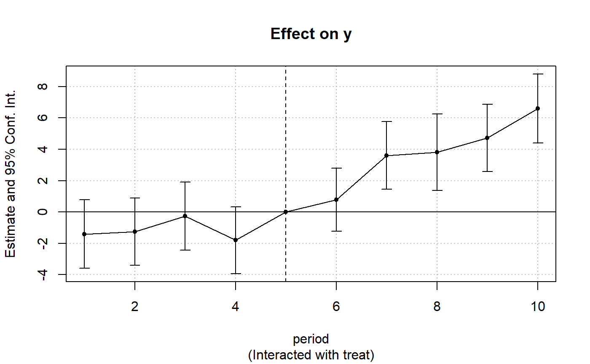

Estimates OLS with any number of fixed-effects.
feols(
fml,
data,
vcov,
weights,
offset,
subset,
split,
fsplit,
cluster,
se,
ssc,
panel.id,
fixef,
fixef.rm = "none",
fixef.tol = 1e-06,
fixef.iter = 10000,
collin.tol = 1e-10,
nthreads = getFixest_nthreads(),
lean = FALSE,
verbose = 0,
warn = TRUE,
notes = getFixest_notes(),
only.coef = FALSE,
combine.quick,
demeaned = FALSE,
mem.clean = FALSE,
only.env = FALSE,
env,
...
)
feols.fit(
y,
X,
fixef_df,
vcov,
offset,
split,
fsplit,
cluster,
se,
ssc,
weights,
subset,
fixef.rm = "perfect",
fixef.tol = 1e-06,
fixef.iter = 10000,
collin.tol = 1e-10,
nthreads = getFixest_nthreads(),
lean = FALSE,
warn = TRUE,
notes = getFixest_notes(),
mem.clean = FALSE,
verbose = 0,
only.env = FALSE,
only.coef = FALSE,
env,
...
)A formula representing the relation to be estimated. For example: fml = z~x+y. To include fixed-effects, insert them in this formula using a pipe: e.g. fml = z~x+y | fe_1+fe_2. You can combine two fixed-effects with ^: e.g. fml = z~x+y|fe_1^fe_2, see details. You can also use variables with varying slopes using square brackets: e.g. in fml = z~y|fe_1[x] + fe_2, see details. To add IVs, insert the endogenous vars./instruments after a pipe, like in y ~ x | c(x_endo1, x_endo2) ~ x_inst1 + x_inst2. Note that it should always be the last element, see details. Multiple estimations can be performed at once: for multiple dep. vars, wrap them in c(): ex c(y1, y2). For multiple indep. vars, use the stepwise functions: ex x1 + csw(x2, x3). The formula fml = c(y1, y2) ~ x1 + cw0(x2, x3) leads to 6 estimation, see details. Square brackets starting with a dot can be used to call global variables: y.[i] ~ x.[1:2] will lead to y3 ~ x1 + x2 if i is equal to 3 in the current environment (see details in xpd).
A data.frame containing the necessary variables to run the model. The variables of the non-linear right hand side of the formula are identified with this data.frame names. Can also be a matrix.
Versatile argument to specify the VCOV. In general, it is either a character scalar equal to a VCOV type, either a formula of the form: vcov_type ~ variables. The VCOV types implemented are: "iid", "hetero" (or "HC1"), "cluster", "twoway", "NW" (or "newey_west"), "DK" (or "driscoll_kraay"), and "conley". It also accepts object from vcov_cluster, vcov_NW, NW, vcov_DK, DK, vcov_conley and conley. It also accepts covariance matrices computed externally. Finally it accepts functions to compute the covariances. See the `vcov` documentation in the vignette.
A formula or a numeric vector. Each observation can be weighted, the weights must be greater than 0. If equal to a formula, it should be one-sided: for example ~ var_weight.
A formula or a numeric vector. An offset can be added to the estimation. If equal to a formula, it should be of the form (for example) ~0.5*x**2. This offset is linearly added to the elements of the main formula 'fml'.
A vector (logical or numeric) or a one-sided formula. If provided, then the estimation will be performed only on the observations defined by this argument.
A one sided formula representing a variable (eg split = ~var) or a vector. If provided, the sample is split according to the variable and one estimation is performed for each value of that variable. If you also want to include the estimation for the full sample, use the argument fsplit instead.
A one sided formula representing a variable (eg split = ~var) or a vector. If provided, the sample is split according to the variable and one estimation is performed for each value of that variable. This argument is the same as split but also includes the full sample as the first estimation.
Tells how to cluster the standard-errors (if clustering is requested). Can be either a list of vectors, a character vector of variable names, a formula or an integer vector. Assume we want to perform 2-way clustering over var1 and var2 contained in the data.frame base used for the estimation. All the following cluster arguments are valid and do the same thing: cluster = base[, c("var1", "var2")], cluster = c("var1", "var2"), cluster = ~var1+var2. If the two variables were used as fixed-effects in the estimation, you can leave it blank with vcov = "twoway" (assuming var1 [resp. var2] was the 1st [res. 2nd] fixed-effect). You can interact two variables using ^ with the following syntax: cluster = ~var1^var2 or cluster = "var1^var2".
Character scalar. Which kind of standard error should be computed: “standard”, “hetero”, “cluster”, “twoway”, “threeway” or “fourway”? By default if there are clusters in the estimation: se = "cluster", otherwise se = "iid". Note that this argument is deprecated, you should use vcov instead.
An object of class ssc.type obtained with the function ssc. Represents how the degree of freedom correction should be done.You must use the function ssc for this argument. The arguments and defaults of the function ssc are: adj = TRUE, fixef.K="nested", cluster.adj = TRUE, cluster.df = "min", t.df = "min", fixef.force_exact=FALSE). See the help of the function ssc for details.
The panel identifiers. Can either be: i) a one sided formula (e.g. panel.id = ~id+time), ii) a character vector of length 2 (e.g. panel.id=c('id', 'time'), or iii) a character scalar of two variables separated by a comma (e.g. panel.id='id,time'). Note that you can combine variables with ^ only inside formulas (see the dedicated section in feols).
Character vector. The names of variables to be used as fixed-effects. These variables should contain the identifier of each observation (e.g., think of it as a panel identifier). Note that the recommended way to include fixed-effects is to insert them directly in the formula.
Can be equal to "perfect" (default), "singleton", "both" or "none". Controls which observations are to be removed. If "perfect", then observations having a fixed-effect with perfect fit (e.g. only 0 outcomes in Poisson estimations) will be removed. If "singleton", all observations for which a fixed-effect appears only once will be removed. The meaning of "both" and "none" is direct.
Precision used to obtain the fixed-effects. Defaults to 1e-5. It corresponds to the maximum absolute difference allowed between two coefficients of successive iterations. Argument fixef.tol cannot be lower than 10000*.Machine$double.eps. Note that this parameter is dynamically controlled by the algorithm.
Maximum number of iterations in fixed-effects algorithm (only in use for 2+ fixed-effects). Default is 10000.
Numeric scalar, default is 1e-10. Threshold deciding when variables should be considered collinear and subsequently removed from the estimation. Higher values means more variables will be removed (if there is presence of collinearity). One signal of presence of collinearity is t-stats that are extremely low (for instance when t-stats < 1e-3).
The number of threads. Can be: a) an integer lower than, or equal to, the maximum number of threads; b) 0: meaning all available threads will be used; c) a number strictly between 0 and 1 which represents the fraction of all threads to use. The default is to use 50% of all threads. You can set permanently the number of threads used within this package using the function setFixest_nthreads.
Logical, default is FALSE. If TRUE then all large objects are removed from the returned result: this will save memory but will block the possibility to use many methods. It is recommended to use the arguments se or cluster to obtain the appropriate standard-errors at estimation time, since obtaining different SEs won't be possible afterwards.
Integer. Higher values give more information. In particular, it can detail the number of iterations in the demeaning algorithm (the first number is the left-hand-side, the other numbers are the right-hand-side variables).
Logical, default is TRUE. Whether warnings should be displayed (concerns warnings relating to convergence state).
Logical. By default, two notes are displayed: when NAs are removed (to show additional information) and when some observations are removed because of collinearity. To avoid displaying these messages, you can set notes = FALSE. You can remove these messages permanently by using setFixest_notes(FALSE).
Logical, default is FALSE. If TRUE, then only the estimated coefficients are returned. Note that the length of the vector returned is always the length of the number of coefficients to be estimated: this means that the variables found to be collinear are returned with an NA value.
Logical. When you combine different variables to transform them into a single fixed-effects you can do e.g. y ~ x | paste(var1, var2). The algorithm provides a shorthand to do the same operation: y ~ x | var1^var2. Because pasting variables is a costly operation, the internal algorithm may use a numerical trick to hasten the process. The cost of doing so is that you lose the labels. If you are interested in getting the value of the fixed-effects coefficients after the estimation, you should use combine.quick = FALSE. By default it is equal to FALSE if the number of observations is lower than 50,000, and to TRUE otherwise.
Logical, default is FALSE. Only used in the presence of fixed-effects: should the centered variables be returned? If TRUE, it creates the items y_demeaned and X_demeaned.
Logical, default is FALSE. Only to be used if the data set is large compared to the available RAM. If TRUE then intermediary objects are removed as much as possible and gc is run before each substantial C++ section in the internal code to avoid memory issues.
(Advanced users.) Logical, default is FALSE. If TRUE, then only the environment used to make the estimation is returned.
(Advanced users.) A fixest environment created by a fixest estimation with only.env = TRUE. Default is missing. If provided, the data from this environment will be used to perform the estimation.
Not currently used.
Numeric vector/matrix/data.frame of the dependent variable(s). Multiple dependent variables will return a fixest_multi object.
Numeric matrix of the regressors.
Matrix/data.frame of the fixed-effects.
A fixest object. Note that fixest objects contain many elements and most of them are for internal use, they are presented here only for information. To access them, it is safer to use the user-level methods (e.g. vcov.fixest, resid.fixest, etc) or functions (like for instance fitstat to access any fit statistic).
The number of observations.
The linear formula of the call.
The call of the function.
The method used to estimate the model.
The family used to estimate the model.
A list containing different parts of the formula. Always contain the linear formula. Then depending on the cases: fixef: the fixed-effects, iv: the IV part of the formula.
The names of each fixed-effect dimension.
The list (of length the number of fixed-effects) of the fixed-effects identifiers for each observation.
The size of each fixed-effect (i.e. the number of unique identifierfor each fixed-effect dimension).
The named vector of estimated coefficients.
Logical, if multicollinearity was found.
The table of the coefficients with their standard errors, z-values and p-values.
The loglikelihood.
Sum of the squared residuals of the null model (containing only with the intercept).
Sum of the squared residuals of the model estimated with fixed-effects only.
The log-likelihood of the null model (containing only with the intercept).
The log-likelihood of the model estimated with fixed-effects only.
The fitted values.
The linear predictors.
The residuals (y minus the fitted values).
Squared correlation between the dependent variable and the expected predictor (i.e. fitted.values) obtained by the estimation.
The Hessian of the parameters.
The variance-covariance matrix of the parameters.
The standard-error of the parameters.
The matrix of the scores (first derivative for each observation).
The difference between the dependent variable and the expected predictor.
The sum of the fixed-effects coefficients for each observation.
(When relevant.) The offset formula.
(When relevant.) The weights formula.
(When relevant.) List containing vectors of integers. It represents the sequential selection of observation vis a vis the original data set.
(When relevant.) Vector containing the variables removed because of collinearity.
(When relevant.) Vector of coefficients, where the values of the variables removed because of collinearity are NA.
The minimal diagonal value of the Cholesky decomposition. Small values indicate possible presence collinearity.
Only when demeaned = TRUE: the centered dependent variable.
Only when demeaned = TRUE: the centered explanatory variable.
The method used to demean each variable along the fixed-effects is based on Berge (2018), since this is the same problem to solve as for the Gaussian case in a ML setup.
You can combine two variables to make it a new fixed-effect using ^. The syntax is as follows: fe_1^fe_2. Here you created a new variable which is the combination of the two variables fe_1 and fe_2. This is identical to doing paste0(fe_1, "_", fe_2) but more convenient.
Note that pasting is a costly operation, especially for large data sets. Thus, the internal algorithm uses a numerical trick which is fast, but the drawback is that the identity of each observation is lost (i.e. they are now equal to a meaningless number instead of being equal to paste0(fe_1, "_", fe_2)). These “identities” are useful only if you're interested in the value of the fixed-effects (that you can extract with fixef.fixest). If you're only interested in coefficients of the variables, it doesn't matter. Anyway, you can use combine.quick = FALSE to tell the internal algorithm to use paste instead of the numerical trick. By default, the numerical trick is performed only for large data sets.
You can add variables with varying slopes in the fixed-effect part of the formula. The syntax is as follows: fixef_var[var1, var2]. Here the variables var1 and var2 will be with varying slopes (one slope per value in fixef_var) and the fixed-effect fixef_var will also be added.
To add only the variables with varying slopes and not the fixed-effect, use double square brackets: fixef_var[[var1, var2]].
In other words:
fixef_var[var1, var2] is equivalent to fixef_var + fixef_var[[var1]] + fixef_var[[var2]]
fixef_var[[var1, var2]] is equivalent to fixef_var[[var1]] + fixef_var[[var2]]
In general, for convergence reasons, it is recommended to always add the fixed-effect and avoid using only the variable with varying slope (i.e. use single square brackets).
To use leads/lags of variables in the estimation, you can: i) either provide the argument panel.id, ii) either set your data set as a panel with the function panel. Doing either of the two will give you acceess to the lagging functions l, f and d.
You can provide several leads/lags/differences at once: e.g. if your formula is equal to f(y) ~ l(x, -1:1), it means that the dependent variable is equal to the lead of y, and you will have as explanatory variables the lead of x1, x1 and the lag of x1. See the examples in function l for more details.
You can interact a numeric variable with a "factor-like" variable by using i(factor_var, continuous_var, ref), where continuous_var will be interacted with each value of factor_var and the argument ref is a value of factor_var taken as a reference (optional).
Using this specific way to create interactions leads to a different display of the interacted values in etable and offers a special representation of the interacted coefficients in the function coefplot. See examples.
It is important to note that *if you do not care about the standard-errors of the interactions*, then you can add interactions in the fixed-effects part of the formula, it will be incomparably faster (using the syntax factor_var[continuous_var], as explained in the section “Varying slopes”).
The function i has in fact more arguments, please see details in its associated help page.
Standard-errors can be computed in different ways, you can use the arguments se and ssc in summary.fixest to define how to compute them. By default, in the presence of fixed-effects, standard-errors are automatically clustered.
The following vignette: On standard-errors describes in details how the standard-errors are computed in fixest and how you can replicate standard-errors from other software.
You can use the functions setFixest_vcov and setFixest_ssc to permanently set the way the standard-errors are computed.
To estimate two stage least square regressions, insert the relationship between the endogenous regressor(s) and the instruments in a formula, after a pipe.
For example, fml = y ~ x1 | x_endo ~ x_inst will use the variables x1 and x_inst in the first stage to explain x_endo. Then will use the fitted value of x_endo (which will be named fit_x_endo) and x1 to explain y.
To include several endogenous regressors, just use "+", like in: fml = y ~ x1 | x_endo1 + x_end2 ~ x_inst1 + x_inst2.
Of course you can still add the fixed-effects, but the IV formula must always come last, like in fml = y ~ x1 | fe1 + fe2 | x_endo ~ x_inst.
If you want to estimate a model without exogenous variables, use "1" as a placeholder: e.g. fml = y ~ 1 | x_endo + x_inst.
By default, the second stage regression is returned. You can access the first stage(s) regressions either directly in the slot iv_first_stage (not recommended), or using the argument stage = 1 from the function summary.fixest. For example summary(iv_est, stage = 1) will give the first stage(s). Note that using summary you can display both the second and first stages at the same time using, e.g., stage = 1:2 (using 2:1 would reverse the order).
Multiple estimations can be performed at once, they just have to be specified in the formula. Multiple estimations yield a fixest_multi object which is ‘kind of’ a list of all the results but includes specific methods to access the results in a handy way. Please have a look at the dedicated vignette: Multiple estimations.
To include multiple dependent variables, wrap them in c() (list() also works). For instance fml = c(y1, y2) ~ x1 would estimate the model fml = y1 ~ x1 and then the model fml = y2 ~ x1.
To include multiple independent variables, you need to use the stepwise functions. There are 4 stepwise functions: sw, sw0, csw, csw0, and mvsw. Of course sw stands for stepwise, and csw for cumulative stepwise. Finally mvsw is a bit special, it stands for multiverse stepwise. Let's explain that.
Assume you have the following formula: fml = y ~ x1 + sw(x2, x3). The stepwise function sw will estimate the following two models: y ~ x1 + x2 and y ~ x1 + x3. That is, each element in sw() is sequentially, and separately, added to the formula. Would have you used sw0 in lieu of sw, then the model y ~ x1 would also have been estimated. The 0 in the name means that the model without any stepwise element also needs to be estimated.
The prefix c means cumulative: each stepwise element is added to the next. That is, fml = y ~ x1 + csw(x2, x3) would lead to the following models y ~ x1 + x2 and y ~ x1 + x2 + x3. The 0 has the same meaning and would also lead to the model without the stepwise elements to be estimated: in other words, fml = y ~ x1 + csw0(x2, x3) leads to the following three models: y ~ x1, y ~ x1 + x2 and y ~ x1 + x2 + x3.
Finally mvsw will add, in a stepwise fashion all possible combinations of the variables in its arguments. For example mvsw(x1, x2, x3) is equivalent to sw0(x1, x2, x3, x1 + x2, x1 + x3, x2 + x3, x1 + x2 + x3). The number of models to estimate grows at a factorial rate: so be cautious!
Multiple independent variables can be combined with multiple dependent variables, as in fml = c(y1, y2) ~ cw(x1, x2, x3) which would lead to 6 estimations. Multiple estimations can also be combined to split samples (with the arguments split, fsplit).
You can also add fixed-effects in a stepwise fashion. Note that you cannot perform stepwise estimations on the IV part of the formula (feols only).
If NAs are present in the sample, to avoid too many messages, only NA removal concerning the variables common to all estimations is reported.
A note on performance. The feature of multiple estimations has been highly optimized for feols, in particular in the presence of fixed-effects. It is faster to estimate multiple models using the formula rather than with a loop. For non-feols models using the formula is roughly similar to using a loop performance-wise.
To use multiple dependent variables in fixest estimations, you need to include them in a vector: like in c(y1, y2, y3).
First, if names are stored in a vector, they can readily be inserted in a formula to perform multiple estimations using the dot square bracket operator. For instance if my_lhs = c("y1", "y2"), calling fixest with, say feols(.[my_lhs] ~ x1, etc) is equivalent to using feols(c(y1, y2) ~ x1, etc). Beware that this is a special feature unique to the left-hand-side of fixest estimations (the default behavior of the DSB operator is to aggregate with sums, see xpd).
Second, you can use a regular expression to grep the left-hand-sides on the fly. When the ..("regex") feature is used naked on the LHS, the variables grepped are inserted into c(). For example ..("Pe") ~ Sepal.Length, iris is equivalent to c(Petal.Length, Petal.Width) ~ Sepal.Length, iris. Beware that this is a special feature unique to the left-hand-side of fixest estimations (the default behavior of ..("regex") is to aggregate with sums, see xpd).
When the data set has been set up globally using setFixest_estimation(data = data_set), the argument vcov can be used implicitly. This means that calls such as feols(y ~ x, "HC1"), or feols(y ~ x, ~id), are valid: i) the data is automatically deduced from the global settings, and ii) the vcov is deduced to be the second argument.
Although the argument 'data' is placed in second position, the data can be piped to the estimation functions. For example, with R >= 4.1, mtcars |> feols(mpg ~ cyl) works as feols(mpg ~ cyl, mtcars).
In a formula, the dot square bracket (DSB) operator can: i) create manifold variables at once, or ii) capture values from the current environment and put them verbatim in the formula.
Say you want to include the variables x1 to x3 in your formula. You can use xpd(y ~ x.[1:3]) and you'll get y ~ x1 + x2 + x3.
To summon values from the environment, simply put the variable in square brackets. For example: for(i in 1:3) xpd(y.[i] ~ x) will create the formulas y1 ~ x to y3 ~ x depending on the value of i.
You can include a full variable from the environment in the same way: for(y in c("a", "b")) xpd(.[y] ~ x) will create the two formulas a ~ x and b ~ x.
The DSB can even be used within variable names, but then the variable must be nested in character form. For example y ~ .["x.[1:2]_sq"] will create y ~ x1_sq + x2_sq. Using the character form is important to avoid a formula parsing error. Double quotes must be used. Note that the character string that is nested will be parsed with the function dsb, and thus it will return a vector.
By default, the DSB operator expands vectors into sums. You can add a comma, like in .[, x], to expand with commas--the content can then be used within functions. For instance: c(x.[, 1:2]) will create c(x1, x2) (and not c(x1 + x2)).
In all fixest estimations, this special parsing is enabled, so you don't need to use xpd.
You can even use multiple square brackets within a single variable, but then the use of nesting is required. For example, the following xpd(y ~ .[".[letters[1:2]]_.[1:2]"]) will create y ~ a_1 + b_2. Remember that the nested character string is parsed with dsb, which explains this behavior.
Berge, Laurent, 2018, "Efficient estimation of maximum likelihood models with multiple fixed-effects: the R package FENmlm." CREA Discussion Papers, 13 (https://wwwen.uni.lu/content/download/110162/1299525/file/2018_13).
For models with multiple fixed-effects:
Gaure, Simen, 2013, "OLS with multiple high dimensional category variables", Computational Statistics & Data Analysis 66 pp. 8--18
See also summary.fixest to see the results with the appropriate standard-errors, fixef.fixest to extract the fixed-effects coefficients, and the function etable to visualize the results of multiple estimations. For plotting coefficients: see coefplot.
And other estimation methods: femlm, feglm, fepois, fenegbin, feNmlm.
#
# Basic estimation
#
res = feols(Sepal.Length ~ Sepal.Width + Petal.Length, iris)
# You can specify clustered standard-errors in summary:
summary(res, cluster = ~Species)
#> OLS estimation, Dep. Var.: Sepal.Length
#> Observations: 150
#> Standard-errors: Clustered (Species)
#> Estimate Std. Error t value Pr(>|t|)
#> (Intercept) 2.249140 0.162626 13.8302 0.00518747 **
#> Sepal.Width 0.595525 0.051733 11.5115 0.00746202 **
#> Petal.Length 0.471920 0.006873 68.6673 0.00021201 ***
#> ---
#> Signif. codes: 0 '***' 0.001 '**' 0.01 '*' 0.05 '.' 0.1 ' ' 1
#> RMSE: 0.329937 Adj. R2: 0.838003
#
# Just one set of fixed-effects:
#
res = feols(Sepal.Length ~ Sepal.Width + Petal.Length | Species, iris)
# By default, the SEs are clustered according to the first fixed-effect
summary(res)
#> OLS estimation, Dep. Var.: Sepal.Length
#> Observations: 150
#> Fixed-effects: Species: 3
#> Standard-errors: Clustered (Species)
#> Estimate Std. Error t value Pr(>|t|)
#> Sepal.Width 0.432217 0.161308 2.67945 0.115623
#> Petal.Length 0.775629 0.126546 6.12925 0.025601 *
#> ---
#> Signif. codes: 0 '***' 0.001 '**' 0.01 '*' 0.05 '.' 0.1 ' ' 1
#> RMSE: 0.305129 Adj. R2: 0.859538
#> Within R2: 0.641507
#
# Varying slopes:
#
res = feols(Sepal.Length ~ Petal.Length | Species[Sepal.Width], iris)
summary(res)
#> OLS estimation, Dep. Var.: Sepal.Length
#> Observations: 150
#> Fixed-effects: Species: 3
#> Varying slopes: Sepal.Width (Species: 3)
#> Standard-errors: Clustered (Species)
#> Estimate Std. Error t value Pr(>|t|)
#> Petal.Length 0.822045 0.10061 8.1706 0.014651 *
#> ---
#> Signif. codes: 0 '***' 0.001 '**' 0.01 '*' 0.05 '.' 0.1 ' ' 1
#> RMSE: 0.298903 Adj. R2: 0.863326
#> Within R2: 0.518738
#
# Combining the FEs:
#
base = iris
base$fe_2 = rep(1:10, 15)
res_comb = feols(Sepal.Length ~ Petal.Length | Species^fe_2, base)
summary(res_comb)
#> OLS estimation, Dep. Var.: Sepal.Length
#> Observations: 150
#> Fixed-effects: Species^fe_2: 30
#> Standard-errors: Clustered (Species^fe_2)
#> Estimate Std. Error t value Pr(>|t|)
#> Petal.Length 0.875613 0.062395 14.0334 1.8483e-14 ***
#> ---
#> Signif. codes: 0 '***' 0.001 '**' 0.01 '*' 0.05 '.' 0.1 ' ' 1
#> RMSE: 0.309865 Adj. R2: 0.823494
#> Within R2: 0.548794
fixef(res_comb)[[1]]
#> setosa_1 setosa_10 setosa_2 setosa_3 setosa_4
#> 3.826581 3.646581 3.661605 3.601703 3.621605
#> setosa_5 setosa_6 setosa_7 setosa_8 setosa_9
#> 3.736532 3.884093 3.859118 3.699118 3.721605
#> versicolor_1 versicolor_10 versicolor_2 versicolor_3 versicolor_4
#> 2.067402 2.142623 2.322426 2.359841 1.922328
#> versicolor_5 versicolor_6 versicolor_7 versicolor_8 versicolor_9
#> 2.187402 2.287304 2.209694 2.284914 2.274963
#> virginica_1 virginica_10 virginica_2 virginica_3 virginica_4
#> 1.769007 1.841642 1.826716 1.716471 1.639252
#> virginica_5 virginica_6 virginica_7 virginica_8 virginica_9
#> 1.474081 2.006422 1.591887 1.791495 1.609007
#
# Using leads/lags:
#
data(base_did)
# We need to set up the panel with the arg. panel.id
est1 = feols(y ~ l(x1, 0:1), base_did, panel.id = ~id+period)
#> NOTE: 108 observations removed because of NA values (RHS: 108).
est2 = feols(f(y) ~ l(x1, -1:1), base_did, panel.id = ~id+period)
#> NOTE: 216 observations removed because of NA values (LHS: 108, RHS: 216).
etable(est1, est2, order = "f", drop="Int")
#> est1 est2
#> Dependent Var.: y f(y,1)
#>
#> f(x1,1) 0.9940*** (0.0542)
#> x1 0.9948*** (0.0487) 0.0081 (0.0592)
#> l(x1,1) 0.0410 (0.0558) 0.0157 (0.0640)
#> _______________ __________________ __________________
#> S.E.: Clustered by: id by: id
#> Observations 972 864
#> R2 0.26558 0.25697
#> Adj. R2 0.26406 0.25438
#> ---
#> Signif. codes: 0 '***' 0.001 '**' 0.01 '*' 0.05 '.' 0.1 ' ' 1
#
# Using interactions:
#
data(base_did)
# We interact the variable 'period' with the variable 'treat'
est_did = feols(y ~ x1 + i(period, treat, 5) | id+period, base_did)
# Now we can plot the result of the interaction with coefplot
coefplot(est_did)

# You have many more example in coefplot help
#
# Instrumental variables
#
# To estimate Two stage least squares,
# insert a formula describing the endo. vars./instr. relation after a pipe:
base = iris
names(base) = c("y", "x1", "x2", "x3", "fe1")
base$x_inst1 = 0.2 * base$x1 + 0.7 * base$x2 + rpois(150, 2)
base$x_inst2 = 0.2 * base$x2 + 0.7 * base$x3 + rpois(150, 3)
base$x_endo1 = 0.5 * base$y + 0.5 * base$x3 + rnorm(150, sd = 2)
base$x_endo2 = 1.5 * base$y + 0.5 * base$x3 + 3 * base$x_inst1 + rnorm(150, sd = 5)
# Using 2 controls, 1 endogenous var. and 1 instrument
res_iv = feols(y ~ x1 + x2 | x_endo1 ~ x_inst1, base)
# The second stage is the default
summary(res_iv)
#> TSLS estimation, Dep. Var.: y, Endo.: x_endo1, Instr.: x_inst1
#> Second stage: Dep. Var.: y
#> Observations: 150
#> Standard-errors: IID
#> Estimate Std. Error t value Pr(>|t|)
#> (Intercept) -5.444083 82.90731 -0.065665 0.94773
#> fit_x_endo1 4.156853 44.67892 0.093038 0.92600
#> x1 0.533483 1.80938 0.294843 0.76853
#> x2 -1.358091 19.67381 -0.069030 0.94506
#> ---
#> Signif. codes: 0 '***' 0.001 '**' 0.01 '*' 0.05 '.' 0.1 ' ' 1
#> RMSE: 7.97755 Adj. R2: -94.4
#> F-test (1st stage), x_endo1: stat = 0.008704, p = 0.925795, on 1 and 146 DoF.
#> Wu-Hausman: stat = 5.23866 , p = 0.023535, on 1 and 145 DoF.
# To show the first stage:
summary(res_iv, stage = 1)
#> TSLS estimation, Dep. Var.: x_endo1, Endo.: x_endo1, Instr.: x_inst1
#> First stage: Dep. Var.: x_endo1
#> Observations: 150
#> Standard-errors: IID
#> Estimate Std. Error t value Pr(>|t|)
#> (Intercept) 1.867844 1.454871 1.283856 0.20122622
#> x_inst1 -0.011136 0.119357 -0.093298 0.92579498
#> x1 0.018677 0.405512 0.046059 0.96332636
#> x2 0.447831 0.128635 3.481404 0.00065818 ***
#> ---
#> Signif. codes: 0 '***' 0.001 '**' 0.01 '*' 0.05 '.' 0.1 ' ' 1
#> RMSE: 1.9138 Adj. R2: 0.122258
#> F-test (1st stage): stat = 0.008704, p = 0.925795, on 1 and 146 DoF.
# To show both the first and second stages:
summary(res_iv, stage = 1:2)
#> IV: First stage: x_endo1
#> TSLS estimation, Dep. Var.: x_endo1, Endo.: x_endo1, Instr.: x_inst1
#> First stage: Dep. Var.: x_endo1
#> Observations: 150
#> Standard-errors: IID
#> Estimate Std. Error t value Pr(>|t|)
#> (Intercept) 1.867844 1.454871 1.283856 0.20122622
#> x_inst1 -0.011136 0.119357 -0.093298 0.92579498
#> x1 0.018677 0.405512 0.046059 0.96332636
#> x2 0.447831 0.128635 3.481404 0.00065818 ***
#> ---
#> Signif. codes: 0 '***' 0.001 '**' 0.01 '*' 0.05 '.' 0.1 ' ' 1
#> RMSE: 1.9138 Adj. R2: 0.122258
#> F-test (1st stage): stat = 0.008704, p = 0.925795, on 1 and 146 DoF.
#>
#> IV: Second stage
#> TSLS estimation, Dep. Var.: y, Endo.: x_endo1, Instr.: x_inst1
#> Second stage: Dep. Var.: y
#> Observations: 150
#> Standard-errors: IID
#> Estimate Std. Error t value Pr(>|t|)
#> (Intercept) -5.444083 82.90731 -0.065665 0.94773
#> fit_x_endo1 4.156853 44.67892 0.093038 0.92600
#> x1 0.533483 1.80938 0.294843 0.76853
#> x2 -1.358091 19.67381 -0.069030 0.94506
#> ---
#> Signif. codes: 0 '***' 0.001 '**' 0.01 '*' 0.05 '.' 0.1 ' ' 1
#> RMSE: 7.97755 Adj. R2: -94.4
#> F-test (1st stage), x_endo1: stat = 0.008704, p = 0.925795, on 1 and 146 DoF.
#> Wu-Hausman: stat = 5.23866 , p = 0.023535, on 1 and 145 DoF.
# Adding a fixed-effect => IV formula always last!
res_iv_fe = feols(y ~ x1 + x2 | fe1 | x_endo1 ~ x_inst1, base)
# With two endogenous regressors
res_iv2 = feols(y ~ x1 + x2 | x_endo1 + x_endo2 ~ x_inst1 + x_inst2, base)
# Now there's two first stages => a fixest_multi object is returned
sum_res_iv2 = summary(res_iv2, stage = 1)
# You can navigate through it by subsetting:
sum_res_iv2[iv = 1]
#> TSLS estimation, Dep. Var.: x_endo1, Endo.: x_endo1, x_endo2, Instr.: x_inst1, x_inst2
#> First stage: Dep. Var.: x_endo1
#> Observations: 150
#> Standard-errors: IID
#> Estimate Std. Error t value Pr(>|t|)
#> (Intercept) 1.850720 1.516307 1.220544 0.22423981
#> x_inst1 -0.011391 0.119922 -0.094984 0.92445853
#> x_inst2 0.003804 0.091032 0.041784 0.96672840
#> x1 0.020822 0.410131 0.050770 0.95957842
#> x2 0.446540 0.132727 3.364349 0.00098184 ***
#> ---
#> Signif. codes: 0 '***' 0.001 '**' 0.01 '*' 0.05 '.' 0.1 ' ' 1
#> RMSE: 1.91379 Adj. R2: 0.116216
#> F-test (1st stage): stat = 0.005195, p = 0.994818, on 2 and 145 DoF.
# The stage argument also works in etable:
etable(res_iv, res_iv_fe, res_iv2, order = "endo")
#> res_iv res_iv_fe res_iv2
#> Dependent Var.: y y y
#>
#> x_endo1 4.157 (44.68) 3.414 (15.83) -1.912 (56.41)
#> x_endo2 -0.0206 (0.2092)
#> (Intercept) -5.444 (82.91) 5.959 (106.1)
#> x1 0.5335 (1.809) 0.6988 (0.9094) 0.6664 (1.476)
#> x2 -1.358 (19.67) -0.6848 (6.072) 1.368 (25.36)
#> Fixed-Effects: -------------- --------------- ----------------
#> fe1 No Yes No
#> _______________ ______________ _______________ ________________
#> S.E. type IID by: fe1 IID
#> Observations 150 150 150
#> R2 -92.436 -61.946 -18.724
#> Within R2 -- -164.08 --
#> ---
#> Signif. codes: 0 '***' 0.001 '**' 0.01 '*' 0.05 '.' 0.1 ' ' 1
etable(res_iv, res_iv_fe, res_iv2, stage = 1:2, order = c("endo", "inst"),
group = list(control = "!endo|inst"))
#> res_iv.1 res_iv.2 res_iv_fe.1 res_iv_fe.2
#> IV stages First Second First Second
#> Dependent Var.: x_endo1 y x_endo1 y
#>
#> x_endo1 4.157 (44.68) 3.414 (15.83)
#> x_endo2
#> x_inst1 -0.0111 (0.1194) -0.0127 (0.0508)
#> x_inst2
#> control Yes Yes Yes Yes
#> Fixed-Effects: ---------------- ------------- ---------------- -------------
#> fe1 No No Yes Yes
#> _______________ ________________ _____________ ________________ _____________
#> S.E. type IID IID by: fe1 by: fe1
#> Observations 150 150 150 150
#> R2 0.13993 -92.436 0.14157 -61.946
#> Within R2 -- -- 0.00829 -164.08
#>
#> res_iv2.1 res_iv2.2 res_iv2.3
#> IV stages First First Second
#> Dependent Var.: x_endo1 x_endo2 y
#>
#> x_endo1 -1.912 (56.41)
#> x_endo2 -0.0206 (0.2092)
#> x_inst1 -0.0114 (0.1199) 3.295*** (0.3310)
#> x_inst2 0.0038 (0.0910) -0.2070 (0.2513)
#> control Yes Yes Yes
#> Fixed-Effects: ---------------- ----------------- ----------------
#> fe1 No No No
#> _______________ ________________ _________________ ________________
#> S.E. type IID IID IID
#> Observations 150 150 150
#> R2 0.13994 0.57761 -18.724
#> Within R2 -- -- --
#> ---
#> Signif. codes: 0 '***' 0.001 '**' 0.01 '*' 0.05 '.' 0.1 ' ' 1
#
# Multiple estimations:
#
# 6 estimations
est_mult = feols(c(Ozone, Solar.R) ~ Wind + Temp + csw0(Wind:Temp, Day), airquality)
# We can display the results for the first lhs:
etable(est_mult[lhs = 1])
#> model 1 model 2 model 3
#> Dependent Var.: Ozone Ozone Ozone
#>
#> (Intercept) -71.03** (23.58) -248.5*** (48.14) -257.7*** (48.45)
#> Wind -3.055*** (0.6633) 14.34*** (4.239) 14.58*** (4.228)
#> Temp 1.840*** (0.2500) 4.076*** (0.5875) 4.136*** (0.5871)
#> Wind x Temp -0.2239*** (0.0540) -0.2273*** (0.0539)
#> Day 0.2940 (0.2185)
#> _______________ __________________ ___________________ ___________________
#> S.E. type IID IID IID
#> Observations 116 116 116
#> R2 0.56871 0.62613 0.63213
#> Adj. R2 0.56108 0.61611 0.61887
#> ---
#> Signif. codes: 0 '***' 0.001 '**' 0.01 '*' 0.05 '.' 0.1 ' ' 1
# And now the second (access can be made by name)
etable(est_mult[lhs = "Solar.R"])
#> model 1 model 2 model 3
#> Dependent Var.: Solar.R Solar.R Solar.R
#>
#> (Intercept) -76.36 (82.00) 10.01 (189.6) 45.19 (190.6)
#> Wind 2.211 (2.308) -5.893 (16.20) -6.214 (16.15)
#> Temp 3.075*** (0.8778) 1.982 (2.333) 1.788 (2.329)
#> Wind x Temp 0.1044 (0.2064) 0.1069 (0.2057)
#> Day -1.161 (0.8277)
#> _______________ _________________ _______________ _______________
#> S.E. type IID IID IID
#> Observations 146 146 146
#> R2 0.08198 0.08363 0.09624
#> Adj. R2 0.06914 0.06427 0.07061
#> ---
#> Signif. codes: 0 '***' 0.001 '**' 0.01 '*' 0.05 '.' 0.1 ' ' 1
# Now we focus on the two last right hand sides
# (note that .N can be used to specify the last item)
etable(est_mult[rhs = 2:.N])
#> model 1 model 2 model 3
#> Dependent Var.: Ozone Solar.R Ozone
#>
#> (Intercept) -248.5*** (48.14) 10.01 (189.6) -257.7*** (48.45)
#> Wind 14.34*** (4.239) -5.893 (16.20) 14.58*** (4.228)
#> Temp 4.076*** (0.5875) 1.982 (2.333) 4.136*** (0.5871)
#> Wind x Temp -0.2239*** (0.0540) 0.1044 (0.2064) -0.2273*** (0.0539)
#> Day 0.2940 (0.2185)
#> _______________ ___________________ _______________ ___________________
#> S.E. type IID IID IID
#> Observations 116 146 116
#> R2 0.62613 0.08363 0.63213
#> Adj. R2 0.61611 0.06427 0.61887
#>
#> model 4
#> Dependent Var.: Solar.R
#>
#> (Intercept) 45.19 (190.6)
#> Wind -6.214 (16.15)
#> Temp 1.788 (2.329)
#> Wind x Temp 0.1069 (0.2057)
#> Day -1.161 (0.8277)
#> _______________ _______________
#> S.E. type IID
#> Observations 146
#> R2 0.09624
#> Adj. R2 0.07061
#> ---
#> Signif. codes: 0 '***' 0.001 '**' 0.01 '*' 0.05 '.' 0.1 ' ' 1
# Combining with split
est_split = feols(c(Ozone, Solar.R) ~ sw(poly(Wind, 2), poly(Temp, 2)),
airquality, split = ~ Month)
# You can display everything at once with the print method
est_split
#> Standard-errors: IID
#>
#>
#> # SAMPLE: 5
#>
#>
#> ### Dep. var.: Ozone
#>
#> Expl. vars.: poly(Wind, 2)
#> Estimate Std. Error t value Pr(>|t|)
#> (Intercept) 29.8505 4.62478 6.45448 1.3810e-06 ***
#> poly(Wind, 2)1 -180.1531 68.14588 -2.64364 1.4516e-02 *
#> poly(Wind, 2)2 93.3187 55.68940 1.67570 1.0734e-01
#> ---
#> Expl. vars.: poly(Temp, 2)
#> Estimate Std. Error t value Pr(>|t|)
#> (Intercept) 60.8847 13.3314 4.56701 0.00013696 ***
#> poly(Temp, 2)1 436.0792 162.6142 2.68168 0.01332077 *
#> poly(Temp, 2)2 156.5738 107.6842 1.45401 0.15945485
#>
#> ### Dep. var.: Solar.R
#>
#> Expl. vars.: poly(Wind, 2)
#> Estimate Std. Error t value Pr(>|t|)
#> (Intercept) 185.975 27.2165 6.833171 4.5627e-07 ***
#> poly(Wind, 2)1 -101.509 403.9730 -0.251277 8.0374e-01
#> poly(Wind, 2)2 -248.609 327.3103 -0.759552 4.5492e-01
#> ---
#> Expl. vars.: poly(Temp, 2)
#> Estimate Std. Error t value Pr(>|t|)
#> (Intercept) 184.737 72.5274 2.547133 0.01769 *
#> poly(Temp, 2)1 -306.202 881.2266 -0.347473 0.73126
#> poly(Temp, 2)2 -822.991 547.8534 -1.502211 0.14609
#>
#>
#> # SAMPLE: 6
#>
#>
#> ### Dep. var.: Ozone
#>
#> Expl. vars.: poly(Wind, 2)
#> Estimate Std. Error t value Pr(>|t|)
#> (Intercept) 21.8206 9.48902 2.299565 0.061137 .
#> poly(Wind, 2)1 166.9646 161.90174 1.031271 0.342179
#> poly(Wind, 2)2 -60.6305 92.54148 -0.655171 0.536652
#> ---
#> Expl. vars.: poly(Temp, 2)
#> Estimate Std. Error t value Pr(>|t|)
#> (Intercept) 34.2959 4.15309 8.25794 0.00017054 ***
#> poly(Temp, 2)1 114.9172 62.20576 1.84737 0.11420526
#> poly(Temp, 2)2 206.4879 79.99940 2.58112 0.04170670 *
#>
#> ### Dep. var.: Solar.R
#>
#> Expl. vars.: poly(Wind, 2)
#> Estimate Std. Error t value Pr(>|t|)
#> (Intercept) 187.7785 16.4660 11.404021 7.8882e-12 ***
#> poly(Wind, 2)1 389.5634 194.8959 1.998828 5.5787e-02 .
#> poly(Wind, 2)2 -72.8180 156.4046 -0.465574 6.4525e-01
#> ---
#> Expl. vars.: poly(Temp, 2)
#> Estimate Std. Error t value Pr(>|t|)
#> (Intercept) 188.337 21.4096 8.796855 2.0604e-09 ***
#> poly(Temp, 2)1 575.587 374.3715 1.537475 1.3581e-01
#> poly(Temp, 2)2 133.702 363.9611 0.367352 7.1622e-01
#>
#>
#> # SAMPLE: 7
#>
#>
#> ### Dep. var.: Ozone
#>
#> Expl. vars.: poly(Wind, 2)
#> Estimate Std. Error t value Pr(>|t|)
#> (Intercept) 49.8115 5.51938 9.024837 5.1064e-09 ***
#> poly(Wind, 2)1 -280.6407 84.25343 -3.330912 2.9055e-03 **
#> poly(Wind, 2)2 58.0027 107.62694 0.538924 5.9512e-01
#> ---
#> Expl. vars.: poly(Temp, 2)
#> Estimate Std. Error t value Pr(>|t|)
#> (Intercept) 29.2107 16.0689 1.817844 0.082138 .
#> poly(Temp, 2)1 584.0963 265.9188 2.196521 0.038399 *
#> poly(Temp, 2)2 14.1887 198.9617 0.071314 0.943764
#>
#> ### Dep. var.: Solar.R
#>
#> Expl. vars.: poly(Wind, 2)
#> Estimate Std. Error t value Pr(>|t|)
#> (Intercept) 213.16197 16.3352 13.049206 2.0111e-13 ***
#> poly(Wind, 2)1 -144.08420 246.7578 -0.583909 5.6396e-01
#> poly(Wind, 2)2 8.70905 324.8247 0.026812 9.7880e-01
#> ---
#> Expl. vars.: poly(Temp, 2)
#> Estimate Std. Error t value Pr(>|t|)
#> (Intercept) 172.303 54.6087 3.155239 0.0038125 **
#> poly(Temp, 2)1 835.016 904.9731 0.922697 0.3640481
#> poly(Temp, 2)2 -107.276 645.9680 -0.166070 0.8692954
#>
#>
#> # SAMPLE: 8
#>
#>
#> ### Dep. var.: Ozone
#>
#> Expl. vars.: poly(Wind, 2)
#> Estimate Std. Error t value Pr(>|t|)
#> (Intercept) 49.7316 6.14979 8.08670 3.5632e-08 ***
#> poly(Wind, 2)1 -289.2515 97.10974 -2.97860 6.7192e-03 **
#> poly(Wind, 2)2 116.2989 90.00343 1.29216 2.0913e-01
#> ---
#> Expl. vars.: poly(Temp, 2)
#> Estimate Std. Error t value Pr(>|t|)
#> (Intercept) 26.1289 16.6482 1.569471 0.130195
#> poly(Temp, 2)1 678.1406 325.9933 2.080228 0.048834 *
#> poly(Temp, 2)2 -162.1223 188.3344 -0.860822 0.398222
#>
#> ### Dep. var.: Solar.R
#>
#> Expl. vars.: poly(Wind, 2)
#> Estimate Std. Error t value Pr(>|t|)
#> (Intercept) 170.3429 15.8361 10.756599 7.2127e-11 ***
#> poly(Wind, 2)1 -78.9215 265.2646 -0.297520 7.6853e-01
#> poly(Wind, 2)2 130.2447 250.8995 0.519111 6.0825e-01
#> ---
#> Expl. vars.: poly(Temp, 2)
#> Estimate Std. Error t value Pr(>|t|)
#> (Intercept) 141.7373 34.9269 4.058112 0.0004267 ***
#> poly(Temp, 2)1 610.4434 708.8908 0.861125 0.3973535
#> poly(Temp, 2)2 -62.8161 420.0627 -0.149540 0.8823275
#>
#>
#> # SAMPLE: 9
#>
#>
#> ### Dep. var.: Ozone
#>
#> Expl. vars.: poly(Wind, 2)
#> Estimate Std. Error t value Pr(>|t|)
#> (Intercept) 32.4899 3.00730 10.80367 4.1394e-11 ***
#> poly(Wind, 2)1 -151.1122 39.26645 -3.84838 6.9340e-04 ***
#> poly(Wind, 2)2 166.7517 45.93576 3.63011 1.2171e-03 **
#> ---
#> Expl. vars.: poly(Temp, 2)
#> Estimate Std. Error t value Pr(>|t|)
#> (Intercept) 35.7733 1.92538 18.57989 < 2.2e-16 ***
#> poly(Temp, 2)1 198.9668 30.21319 6.58543 5.5334e-07 ***
#> poly(Temp, 2)2 160.4793 32.36259 4.95879 3.7465e-05 ***
#>
#> ### Dep. var.: Solar.R
#>
#> Expl. vars.: poly(Wind, 2)
#> Estimate Std. Error t value Pr(>|t|)
#> (Intercept) 168.0471 14.9433 11.245665 1.0799e-11 ***
#> poly(Wind, 2)1 -94.9627 195.7141 -0.485211 6.3144e-01
#> poly(Wind, 2)2 27.9996 231.6709 0.120859 9.0470e-01
#> ---
#> Expl. vars.: poly(Temp, 2)
#> Estimate Std. Error t value Pr(>|t|)
#> (Intercept) 166.482 15.3173 10.868939 2.3073e-11 ***
#> poly(Temp, 2)1 204.784 241.8651 0.846686 4.0461e-01
#> poly(Temp, 2)2 -146.653 256.4108 -0.571947 5.7209e-01
# Different way of displaying the results with "compact"
summary(est_split, "compact")
#> sample lhs rhs (Intercept) poly(Wind, 2)1 poly(Wind, 2)2
#> 1 5 Ozone poly(Wind, 2) 29.9*** (4.62) -180* (68.1) 93.3 (55.7)
#> 2 5 Ozone poly(Temp, 2) 60.9*** (13.3)
#> 3 5 Solar.R poly(Wind, 2) 186*** (27.2) -102 (404) -249 (327)
#> 4 5 Solar.R poly(Temp, 2) 185* (72.5)
#> 5 6 Ozone poly(Wind, 2) 21.8. (9.49) 167 (162) -60.6 (92.5)
#> 6 6 Ozone poly(Temp, 2) 34.3*** (4.15)
#> 7 6 Solar.R poly(Wind, 2) 188*** (16.5) 390. (195) -72.8 (156)
#> 8 6 Solar.R poly(Temp, 2) 188*** (21.4)
#> 9 7 Ozone poly(Wind, 2) 49.8*** (5.52) -281** (84.3) 58 (108)
#> 10 7 Ozone poly(Temp, 2) 29.2. (16.1)
#> 11 7 Solar.R poly(Wind, 2) 213*** (16.3) -144 (247) 8.71 (325)
#> 12 7 Solar.R poly(Temp, 2) 172** (54.6)
#> 13 8 Ozone poly(Wind, 2) 49.7*** (6.15) -289** (97.1) 116 (90)
#> 14 8 Ozone poly(Temp, 2) 26.1 (16.6)
#> 15 8 Solar.R poly(Wind, 2) 170*** (15.8) -78.9 (265) 130 (251)
#> 16 8 Solar.R poly(Temp, 2) 142*** (34.9)
#> 17 9 Ozone poly(Wind, 2) 32.5*** (3.01) -151*** (39.3) 167** (45.9)
#> 18 9 Ozone poly(Temp, 2) 35.8*** (1.93)
#> 19 9 Solar.R poly(Wind, 2) 168*** (14.9) -95 (196) 28 (232)
#> 20 9 Solar.R poly(Temp, 2) 166*** (15.3)
#> poly(Temp, 2)1 poly(Temp, 2)2
#> 1
#> 2 436* (163) 157 (108)
#> 3
#> 4 -306 (881) -823 (548)
#> 5
#> 6 115 (62.2) 206* (80)
#> 7
#> 8 576 (374) 134 (364)
#> 9
#> 10 584* (266) 14.2 (199)
#> 11
#> 12 835 (905) -107 (646)
#> 13
#> 14 678* (326) -162 (188)
#> 15
#> 16 610 (709) -62.8 (420)
#> 17
#> 18 199*** (30.2) 160*** (32.4)
#> 19
#> 20 205 (242) -147 (256)
# You can still select which sample/LHS/RHS to display
est_split[sample = 1:2, lhs = 1, rhs = 1]
#> Standard-errors: IID
#> Dep. var.: Ozone
#> Expl. vars.: poly(Wind, 2)
#> Sample: 5
#> Estimate Std. Error t value Pr(>|t|)
#> (Intercept) 29.8505 4.62478 6.45448 1.3810e-06 ***
#> poly(Wind, 2)1 -180.1531 68.14588 -2.64364 1.4516e-02 *
#> poly(Wind, 2)2 93.3187 55.68940 1.67570 1.0734e-01
#> ---
#> Sample: 6
#> Estimate Std. Error t value Pr(>|t|)
#> (Intercept) 21.8206 9.48902 2.299565 0.061137 .
#> poly(Wind, 2)1 166.9646 161.90174 1.031271 0.342179
#> poly(Wind, 2)2 -60.6305 92.54148 -0.655171 0.536652
#
# Argument sliding
#
# When the data set is set up globally, you can use the vcov argument implicitly
base = iris
names(base) = c("y", "x1", "x2", "x3", "species")
no_sliding = feols(y ~ x1 + x2, base, ~species)
# With sliding
setFixest_estimation(data = base)
# ~species is implicitly deduced to be equal to 'vcov'
sliding = feols(y ~ x1 + x2, ~species)
etable(no_sliding, sliding)
#> no_sliding sliding
#> Dependent Var.: y y
#>
#> (Intercept) 2.249** (0.1626) 2.249** (0.1626)
#> x1 0.5955** (0.0517) 0.5955** (0.0517)
#> x2 0.4719*** (0.0069) 0.4719*** (0.0069)
#> _______________ __________________ __________________
#> S.E.: Clustered by: species by: species
#> Observations 150 150
#> R2 0.84018 0.84018
#> Adj. R2 0.83800 0.83800
#> ---
#> Signif. codes: 0 '***' 0.001 '**' 0.01 '*' 0.05 '.' 0.1 ' ' 1
# Resetting the global options
setFixest_estimation(data = NULL)
#
# Formula expansions
#
# By default, the features of the xpd function are enabled in
# all fixest estimations
# Here's a few examples
base = setNames(iris, c("y", "x1", "x2", "x3", "species"))
# dot square bracket operator
feols(y ~ x.[1:3], base)
#> OLS estimation, Dep. Var.: y
#> Observations: 150
#> Standard-errors: IID
#> Estimate Std. Error t value Pr(>|t|)
#> (Intercept) 1.855997 0.250777 7.40098 9.8539e-12 ***
#> x1 0.650837 0.066647 9.76538 < 2.2e-16 ***
#> x2 0.709132 0.056719 12.50248 < 2.2e-16 ***
#> x3 -0.556483 0.127548 -4.36293 2.4129e-05 ***
#> ---
#> Signif. codes: 0 '***' 0.001 '**' 0.01 '*' 0.05 '.' 0.1 ' ' 1
#> RMSE: 0.310327 Adj. R2: 0.855706
# fetching variables via regular expressions: ..("regex")
feols(y ~ ..("1|2"), base)
#> OLS estimation, Dep. Var.: y
#> Observations: 150
#> Standard-errors: IID
#> Estimate Std. Error t value Pr(>|t|)
#> (Intercept) 2.249140 0.247970 9.07022 7.0385e-16 ***
#> x1 0.595525 0.069328 8.58994 1.1633e-14 ***
#> x2 0.471920 0.017118 27.56916 < 2.2e-16 ***
#> ---
#> Signif. codes: 0 '***' 0.001 '**' 0.01 '*' 0.05 '.' 0.1 ' ' 1
#> RMSE: 0.329937 Adj. R2: 0.838003
# NOTA: it also works for multiple LHS
mult1 = feols(x.[1:2] ~ y + species, base)
mult2 = feols(..("y|3") ~ x.[1:2] + species, base)
etable(mult1, mult2)
#> mult1[[1]] mult1[[2]] mult2[[1]]
#> Dependent Var.: x1 x2 y
#>
#> (Intercept) 1.677*** (0.2354) -1.702*** (0.2301) 2.390*** (0.2623)
#> y 0.3499*** (0.0463) 0.6321*** (0.0453)
#> speciesversicolor -0.9834*** (0.0721) 2.210*** (0.0705) -0.9558*** (0.2152)
#> speciesvirginica -1.008*** (0.0933) 3.090*** (0.0912) -1.394*** (0.2857)
#> x1 0.4322*** (0.0814)
#> x2 0.7756*** (0.0643)
#> _________________ ___________________ __________________ ___________________
#> S.E. type IID IID IID
#> Observations 150 150 150
#> R2 0.56925 0.97489 0.86331
#> Adj. R2 0.56040 0.97438 0.85954
#>
#> mult2[[2]]
#> Dependent Var.: x3
#>
#> (Intercept) -0.6953*** (0.1424)
#> y
#> speciesversicolor 0.7369*** (0.1169)
#> speciesvirginica 1.176*** (0.1551)
#> x1 0.2020*** (0.0442)
#> x2 0.1701*** (0.0349)
#> _________________ ___________________
#> S.E. type IID
#> Observations 150
#> R2 0.95243
#> Adj. R2 0.95112
#> ---
#> Signif. codes: 0 '***' 0.001 '**' 0.01 '*' 0.05 '.' 0.1 ' ' 1
# Use .[, stuff] to include variables in functions:
feols(y ~ csw(x.[, 1:3]), base)
#> Standard-errors: IID
#> Expl. vars.: x1
#> Estimate Std. Error t value Pr(>|t|)
#> (Intercept) 6.526223 0.478896 13.62763 < 2.2e-16 ***
#> x1 -0.223361 0.155081 -1.44029 0.1519
#> ---
#> Expl. vars.: x1 + x2
#> Estimate Std. Error t value Pr(>|t|)
#> (Intercept) 2.249140 0.247970 9.07022 7.0385e-16 ***
#> x1 0.595525 0.069328 8.58994 1.1633e-14 ***
#> x2 0.471920 0.017118 27.56916 < 2.2e-16 ***
#> ---
#> Expl. vars.: x1 + x2 + x3
#> Estimate Std. Error t value Pr(>|t|)
#> (Intercept) 1.855997 0.250777 7.40098 9.8539e-12 ***
#> x1 0.650837 0.066647 9.76538 < 2.2e-16 ***
#> x2 0.709132 0.056719 12.50248 < 2.2e-16 ***
#> x3 -0.556483 0.127548 -4.36293 2.4129e-05 ***
# Same for ..(, "regex")
feols(y ~ csw(..(,"x")), base)
#> Standard-errors: IID
#> Expl. vars.: x1
#> Estimate Std. Error t value Pr(>|t|)
#> (Intercept) 6.526223 0.478896 13.62763 < 2.2e-16 ***
#> x1 -0.223361 0.155081 -1.44029 0.1519
#> ---
#> Expl. vars.: x1 + x2
#> Estimate Std. Error t value Pr(>|t|)
#> (Intercept) 2.249140 0.247970 9.07022 7.0385e-16 ***
#> x1 0.595525 0.069328 8.58994 1.1633e-14 ***
#> x2 0.471920 0.017118 27.56916 < 2.2e-16 ***
#> ---
#> Expl. vars.: x1 + x2 + x3
#> Estimate Std. Error t value Pr(>|t|)
#> (Intercept) 1.855997 0.250777 7.40098 9.8539e-12 ***
#> x1 0.650837 0.066647 9.76538 < 2.2e-16 ***
#> x2 0.709132 0.056719 12.50248 < 2.2e-16 ***
#> x3 -0.556483 0.127548 -4.36293 2.4129e-05 ***